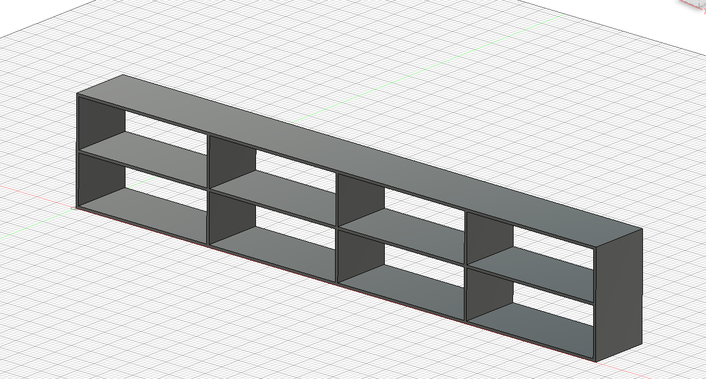
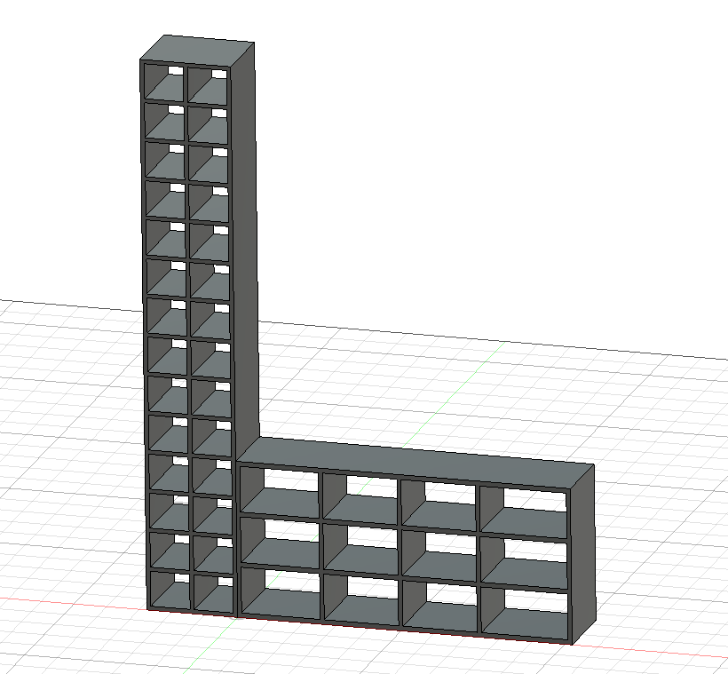

Eagle Scout project
Designed and built an integrated bench and cubby system for Torrey Pines Wrestling to address storage limitations.



Construction
Built using Baltic Birch plywood cut with precision tools including table saws and panel saws.
Fabrication
Used CNC machining (Avid PRO4896) to create precise grooves and ensure accurate assembly.
Leadership
Led planning, design, and execution while coordinating volunteers and managing workflow.